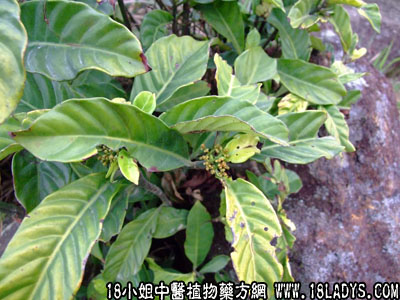

别名：吹筒树、吹筒管、暗山公、雌雄叶、山大雁、山大颜。
植物名：九节。
生长环境：本品为直立灌木。是山野树林下，稍为隐蔽的地方，极为常见的一种野生植物。
分布：广东到处皆有，中国南部各省亦有，亚洲热带地区亦有分布。
入药部分：根。
自采地点：山岗。
性味：性微凉、味淡。
功能：开胸消滞、清热解毒、祛风去湿。
主治、用量和用法：1、胸中滞痛：干根5钱至1两，清水煎服；2、大肠血热：用法如上；3、脚骨无力、瘫痪：用干根2至4两，老母鸡1只，清水煎，冲酒服。
附录：（叶）1、皮肤烂肉：干生叶都可以，适量，煎水外洗；2、疮疡：用法同上；3、痔疮：用叶适量，煎水洗及熏肛门多次。
（方歌）山大刀根叶要分，祛风去湿用其根，疮疡血痔还须叶，煎汤频洗又频熏。